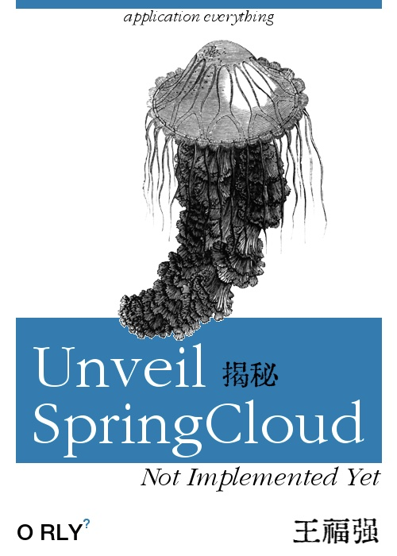

我为什么没写《SpringCloud揭秘》？
王福强
2021-03-20有人肯定纳闷儿， 我写了《Spring揭秘》， 又写《SpringBoot揭秘》，为啥单单没有写《SpringCloud》揭秘呢？ 1

我几年前就说过一句话：
“能在应用层做掉的都在应用层做，能不在应用层做的就不要在应用层做。”
我来解释一下这句话什么意思…
实际上这句话前后两段说的是企业研发能力的不同阶段。
前半句“能在应用层做掉的都在应用层做”说的一般是从零到一发展起来的创业公司或者发展型公司，这个阶段的公司团队都是从“重业务研发、拿业务结果”锤炼出来的，所以，从能力上来说，即使有干将和资深骨干，做事思维上也往往偏应用层研发思维模式，即“能在应用层做掉的都在应用层做”。
后半句“能不在应用层做的就不要在应用层做。”说得是企业有了明晰的技术体系治理愿景和能力，让平台的归平台， 让应用的归应用。在技术体系的框架内，各自做好自己份内的工作和关注点就可以了，这个时候拼得是系统化整体效能和组织能力。
现在说回我为什么没写《SpringCloud揭秘》， 因为我认为SpringCloud是在用应用层的思维做基础设施，不要说2014 ~ 2016年那时候我就不推荐这么玩，在今天各家公有云基础设施已经足够完备和成熟的情况下，就更不会推荐这么玩了。 应用好云的能力，多思考如何在业务层快速试错和拿结果，或许才是这个时代创业公司最应该关注的重点。
SaaS热战正酣的时代，在应用层做业务创新，不要在业务层做技术创新 ，这才是“务正业” ；）
BTW. 如果自己团队能力和喜好就是想和要用SpringCloud， Just go ahead， 我不是说不能用，自己团队可以把控好用好拿到结果也挺好的，只不过不符合我的理念而已，所以，仅仅只是个人观点，也仅凭参考。
是不是真的有人觉得那本《SpringBoot揭秘》很弱逼， 连SpringCloud都没讲？↩︎